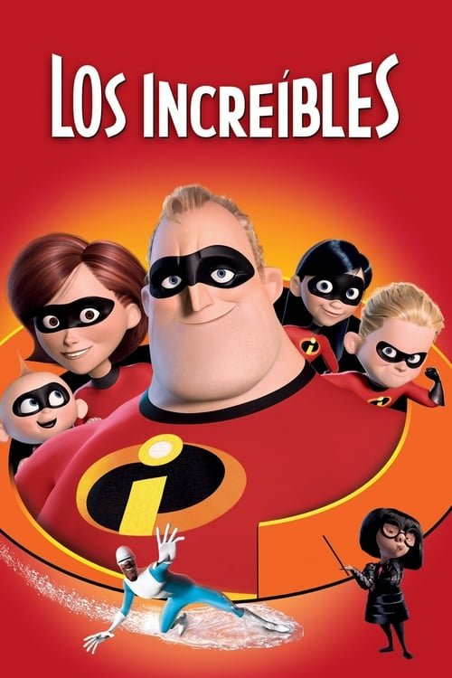

Los Increíbles (2004)
Sinopsis Rápida
Una familia de superhéroes en retiro debe volver a la acción cuando una amenaza inesperada pone en peligro al mundo, enfrentándose a sus propios demonios y a una conspiración que involucra a una mente maestra diabólica.
Sinopsis Detallada
En un mundo donde los superhéroes son ilegalizados, la familia Parr, compuesta por el Sr. Increíble, Elastigirl y sus tres hijos con superpoderes, intenta llevar una vida normal. Sin embargo, la aparición de un nuevo villano los obligará a resurgir y enfrentarse a sus habilidades y a una conspiración que amenaza con desatar el caos. La película explora temas de familia, identidad y el choque entre la vida privada y la responsabilidad pública. La brillante animación y la narrativa cautivadora ofrecen una experiencia única y memorable.
¿Por qué tenés que verla?
- Una historia llena de acción, humor y corazón que cautivará a toda la familia.
- La innovadora animación de Pixar y la dirección magistral de Brad Bird elevan la experiencia visual a un nuevo nivel.
- Su influencia en el género de superhéroes y su mensaje sobre la importancia de la familia han trascendido generaciones.
- Una trama inteligente y emocionante que combina acción con momentos de reflexión.
Idea Extra
Análisis comparativo de la evolución visual y narrativa entre 'Los Increíbles' y 'Los Increíbles 2', destacando las mejoras y diferencias en ambas producciones.
{{CONTENIDO_RELACIONADO}}